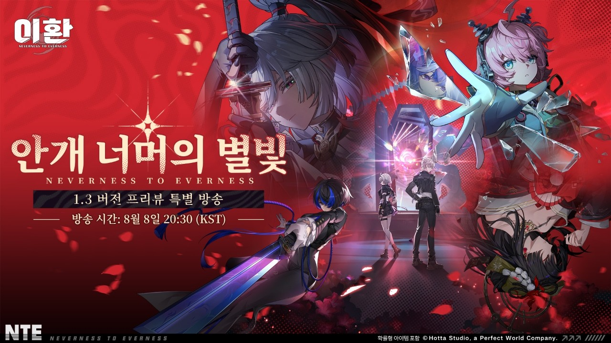
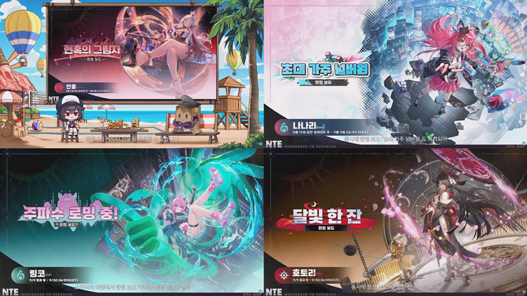
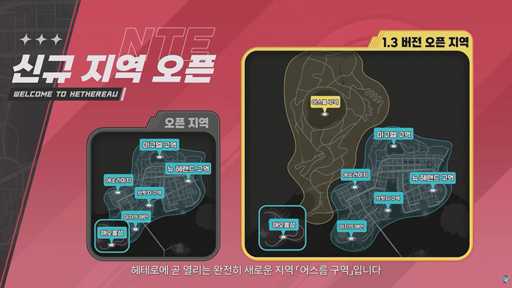
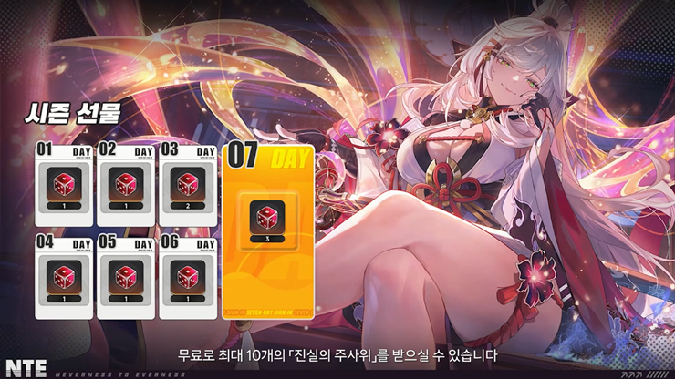

이환 1.3 안개 너머의 별빛 업데이트 8월 19일 정리, 잔홍은 전반기ㆍ링코는 후반기 신규지역 어스름구역까지
주말 내내 유튜브 알림만 기다리다가 결국 토요일 저녁 8시 반에 딱 맞춰 챙겨본 주인장입니다(?). 이환 1.3 버전 '안개 너머의 별빛' 프리뷰 방송이 8월 8일에 올라왔는데, 인벤 기사를 다시 읽어봤더니 짚고 넘어갈 게 생각보다 많더라고요.
한 줄로 요약하면, 8월 19일 전반기엔 잔홍이 먼저 오고, 9월 9일 후반기엔 링코가 넘어오고, 그 사이 어스름 구역이라는 신규 지역이랑 메인 스토리 6장, 한여름 이벤트 라인업까지 통째로 깔린다는 겁니다. 8월 19일 업데이트 당일 기준으로는 잔홍만 받을 수 있다는 것도 미리 못박아 둘게요. 이 부분 헷갈려하시는 분들이 벌써 꽤 계시더라고요.

8월 8일 오후 8시 30분에 방송된 이환 1.3 '안개 너머의 별빛' 프리뷰 특별 방송 공식 키비주얼
이미지 출처: 이환(NTE) 공식 유튜브
1. 언제부터 언제까지 - '안개 너머의 별빛' 6주 로드맵
이환 1.3 버전 '안개 너머의 별빛'은 8월 19일 수요일부터 9월 30일 수요일까지, 약 6주간 진행됩니다. 전반기ㆍ후반기가 각각 3주씩 나뉘어 있고, 9월 9일 정기 점검을 기점으로 콘텐츠가 한 번 갈아끼워지는 구조예요. 즉 이번 업데이트는 한 번에 다 열리는 게 아니라, 앞부분과 뒷부분 콘텐츠가 따로 준비돼 있다고 보시면 됩니다. 정확한 분 단위 점검 시각은 업데이트 직전 공식 공지로 한 번 더 확인하시는 게 안전해요. 6주라는 기간도 최근 이환 업데이트치고는 꽤 넉넉하게 잡힌 편이라, 콘텐츠를 천천히 나눠서 즐기라는 의도가 담긴 것 같습니다.
2. 신캐 잔홍ㆍ링코, 동시 출시가 아니라구요?
잔홍은 전반기(8월 19일~9월 9일 오전 6시 59분), 링코는 후반기(9월 9일 점검 후~9월 30일 오전 6시 59분)에 순서대로 등장합니다. 그러니까 8월 19일 업데이트 당일에 실제로 뽑을 수 있는 신규 S급은 잔홍 하나뿐이고, 링코는 3주는 더 기다려야 만날 수 있어요.
| 구분 | 전반기 (8/19 ~ 9/9 06:59) | 후반기 (9/9 점검 후 ~ 9/30 06:59) |
|---|---|---|
| 신규 S급 | 잔홍 (주 속성ㆍ메인 딜러) 보드 「현혹의 그림자」 | 링코 (령 속성ㆍ광역 서브 딜러) 보드 「주파수 로밍 중!」 |
| 복각 | 나나리 보드 「초대, 가주 넘버원」 | 호토리 보드 「달빛 한 잔」 |

전반기 잔홍(신규)ㆍ나나리(복각), 후반기 링코(신규)ㆍ호토리(복각) 한정 배너 4종
이미지 출처: 인벤 뉴스
잔홍은 주 속성 메인 딜러로 나오고, 한정 보드 '현혹의 그림자'가 같이 걸립니다. 전반기엔 예전 캐릭터 나나리도 '초대, 가주 넘버원' 보드로 복각되고요. 후반기 주인공 링코는 령 속성 광역 서브 딜러로, 한정 보드는 '주파수 로밍 중!'입니다. 호토리 복각 보드 '달빛 한 잔'도 링코랑 같은 타이밍에 돌아옵니다. 여기서 '보드'는 해당 캐릭터 전용 한정 장비 정도로 보시면 되는데, 다른 게임으로 치면 캐릭터 전용 무기ㆍ악세서리 세트에 가까운 개념이라고 보시면 이해가 편하실 거예요.
다만 보드의 정확한 옵션ㆍ효과나 잔홍ㆍ링코 두 캐릭터의 스킬 구성ㆍ세부 능력치까지는 이번 방송에서 자세히 다루지 않아서, 8월 19일 업데이트 당일에 직접 확인해서 다시 정리해 드릴게요. 제가 보기엔 이번엔 두 캐릭터를 한 번에 밀어붙이는 대신 3주 텀을 두고 순서대로 낸다는 점이 눈에 띄는데, 재화를 나눠서 계획적으로 모을 수 있다는 뜻이기도 해서 나쁘지 않은 구성 같아요.
3. 어스름 구역 + 메인 스토리 6장 - 지도가 넓어진다
8월 19일부터는 헤테로 시티 북서쪽에 '어스름 구역'이라는 신규 오픈 지역이 열리고, 메인 스토리도 6장 「안개 둥지 게임」까지 이어집니다. 1.1 '꿈의 회랑'부터 이어져 온 주홍글씨 사건이 이번 6장에서 마무리되는 구조고, 링코랑 니샤가 새 등장인물로 스토리에 합류하면서 신규 지역 이상 '안개 둥지'도 같이 등장한다고 하네요. 인벤 기사에서 '압도적인 규모'라는 표현을 쓸 정도로 넓게 잡았다고 하니, 탐사 좋아하시는 분들은 기대해볼 만해요. 마을 논밭이랑 산속 오솔길, 각종 서킷을 무대로 한 신규 랠리 코스ㆍ레이싱 챌린지도 같이 열리는데, 코스마다 커브 조합이랑 노면 상태ㆍ경사도가 달라서 운전 실력이 좀 필요하다고 하고, 트래킹 모드로 주행 기록도 남길 수 있다고 하더라고요.

헤테로 시티 북서쪽에 새로 열리는 어스름 구역 안내 지도
이미지 출처: 인벤 뉴스
4. 한여름 이벤트 라인업 - 뭐가 새로 열리나
여름 테마 신규 콘텐츠라고 다 같은 날 열리는 게 아니라, 항목마다 오픈 시점이 조금씩 다르게 잡혀 있더라고요. 종류로 나눠보면 이 정도예요.
- 배구 스타 - 비치발리볼 2대2 PvE (8월 19일 업데이트 후 ~ 9월 30일 06:59)
- 시련의 연회 - 마몬ㆍ모픽스 도전 스테이지 추가 (8월 19일 업데이트 후 ~ 9월 30일 06:59)
- 파도를 가르는 질주 - 수상 트랙 레이싱 (8월 19일 업데이트 후 ~ 9월 30일 06:59)
- 궤도 너머 불빛의 고리 (8월 27일 06:00 ~ 9월 10일 05:59)
- 난파선 보물찾기 - 수상 오토바이로 부유물 회수 (8월 28일 11:00 ~ 9월 30일 06:59)
- 궤도 너머의 메아리 - 생존 도전 (9월 9일 업데이트 후 ~ 9월 30일 06:59)
- 산들바람 속 라이딩 - 2인용 자전거 동행 (9월 17일 11:00 ~ 9월 30일 06:59)
- 여름 수영복 코스튬
- 오늘도 평화로운 공사장 - 중장비 조작 건설 임무(신규 상시 콘텐츠)
- 진룡의 시련 - 층별 도전(신규 상시 콘텐츠)
여기에 더해 1.2 버전의 「야옹 속보」ㆍ「땅땅땅」ㆍ「아슬아슬 숨바꼭질」 3종도 이번에 상시 콘텐츠로 전환된다고 하니, 여름 한정이라고 부담 갖지 마시고 시간 날 때마다 하나씩 찍먹해 보시는 것도 괜찮을 것 같아요.
+ 그래픽ㆍ편의성도 같이 개선됩니다
참고로 이번 1.3에서는 캐릭터 렌더링도 같이 개선된다고 해요. 빛이랑 그림자 표현이 강화돼서 캐릭터가 배경에 훨씬 자연스럽게 녹아든다고 하니, 그래픽 쪽 변화도 은근히 기대되는 부분이에요. 코스튬 쪽에도 '랜덤 코스튬' 기능이 새로 붙는데, 특정 캐릭터한테 이 기능을 켜두면 그 캐릭터가 파티에 있는 동안은 게임 접속이나 장면 전환 때마다 보관함 코스튬 중 하나가 무작위로 입혀진다고 하네요. 코스튬 많이 모아두신 분들은 한 번쯤 켜볼 만한 기능 같아요.
5. 한눈에 보는 1.3~1.4 로드맵
1.3~1.4 로드맵은 8/19 업데이트로 시작해서 9/9 캐릭터 교체, 9/30 종료를 거쳐 1.4 놀이공원 맵 예고로 이어지는 흐름이에요.
| 시기 | 내용 |
|---|---|
| 8/19(수) 업데이트 | 잔홍 신규 + 나나리 복각, 어스름 구역, 메인 스토리 6장, 여름 이벤트 시작 |
| 9/9 점검 후 | 링코 신규로 교체 + 호토리 복각 |
| 9/30(수) 06:59 | 1.3 버전 '안개 너머의 별빛' 종료 |
| 1.4 버전(시기 미정) | 놀이공원 맵 공개 예고 |
6. 접속만 해도 챙기는 보상
업데이트 기념으로 접속 보상도 같이 챙겨주는데, 1.3 버전 업데이트 후 7일간 접속하면 시즌 선물로 '진실의 주사위'를 최대 10개까지 받을 수 있어요. 여기에 더해 헌터 레벨 Lv.11 이상인 감정사라면 베이글 보급으로 '좋아요잼' 56,000개가 우편함으로 따로 지급된다고 하니, 레벨 조건 되시는 분들은 우편함 확인 잊지 마세요.

업데이트 후 7일 접속하면 최대 10개까지 주는 시즌 선물 '진실의 주사위'
이미지 출처: 인벤 뉴스
자주 묻는 질문
Q. 어스름 구역은 얼마나 넓나요?
A. 도로 서킷을 한 바퀴 도는 데만 10분 넘게 걸릴 정도로 넓다고 소개됐습니다. 어지간한 소규모 지역 하나를 통째로 도는 시간이라, 확실히 체감되는 크기일 것 같아요.
Q. 1.3 버전 끝나면 다음엔 뭐가 나오나요?
A. 다음 버전인 1.4에서 감정사들이 오래 기다려온 놀이공원 맵이 공개된다는 예고가 나왔습니다. 큰 틀에서 보면 1.3이 캐릭터ㆍ지역 중심이었다면, 1.4는 테마파크형 콘텐츠로 결을 바꿔 가는 흐름으로 보이더라고요.
참고한 곳
· 이환(NTE) 공식 유튜브 - 「이환」 1.3 버전 프리뷰 특별 방송 (2026.08.08 방송, 2026.08.11 기준)
· 인벤 뉴스 - "잔홍, 링코와 여름 이벤트, 수영복까지 총출동! '이환' 1.3 버전 방송 정리" (2026.08.08)